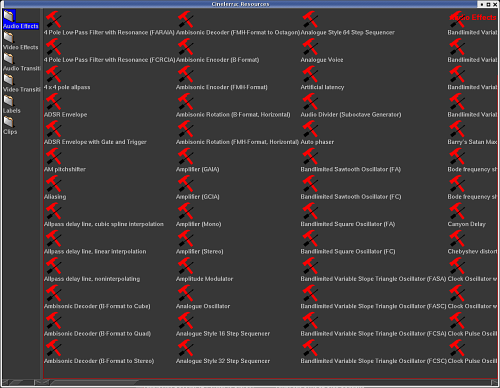

| [ << ] | [ >> ] | [Top] | [Contents] | [Index] | [ ? ] |
Los efectos Ladspa son efectos de audio que están soportados tanto en tiempo real como renderizados. Los efectos Ladspa (también llamados plugins) se obtienen de Internet y son de calidad variable. La mayoría no se pueden modificar en tiempo real y funcionan mejor renderizados. Algunos no funcionan o producen múltiples errores. Otros sólo se pueden aplicar sobre una única pista, debido a la ausencia de re-entrada. Aunque Cinelerra implementa la interfaz Ladspa con toda la precisión posible, varias pistas de tiempo real o procesamiento simultáneo van más allá del empleo que suelen hacer la mayoría de usuarios de Ladspa. Los efectos Ladspa aparecen en la carpeta de Audio como un martillo y un destornillador, con la intención de hacer ver que son plugins para desarrolladores de audio en GNU/Linux.

Efectos Ladspa en la carpeta Audio.
Para habilitar los efectos Ladspa basta con apuntar la variable de entorno LADSPA_PATH
a la localización con los plugins Ladspa:
export LADSPA_PATH=/usr/lib/ladspa
También es posible habilitarlos poniendo dichos efectos en el directorio
`/usr/lib/cinelerra'.
Los usuarios de Debian pueden conseguir muchos plugins usando apt:
apt-cache search ladspa
apt-get install jack-rack cmt blop swh-plugins
| [ << ] | [ >> ] | [Top] | [Contents] | [Index] | [ ? ] |
This document was generated by Raffa on octubre, 8 2007 using texi2html 1.76.